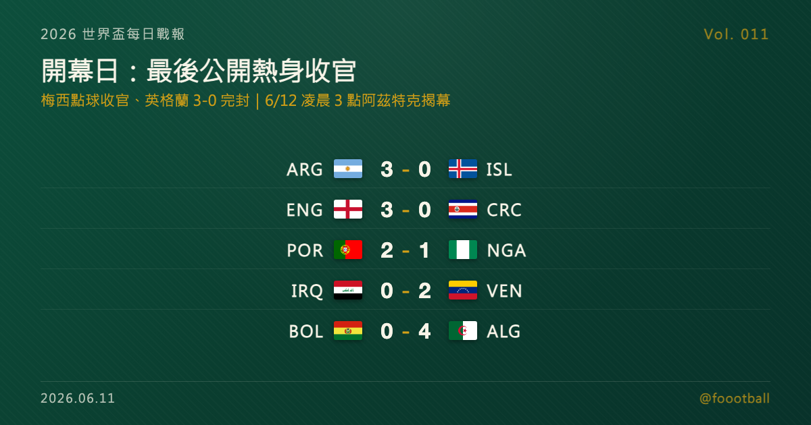

開幕日：梅西替補破門、英格蘭 3-0 完封——最後一批公開熱身結束，比分開始算真的
世界盃開幕日的最後一批熱身賽收齊：梅西在阿根廷 3-0 冰島一戰替補登場、點球破門，替自己的世界盃前準備畫上句點；英格蘭 3-0 完封哥斯大黎加、葡萄牙 2-1 險勝奈及利亞。台北時間 6/12 凌晨 3 點，墨西哥對南非的揭幕戰在阿茲特克開踢——公開熱身結束，正賽開始。

2026 世界盃每日戰報 Vol. 011
§1 即時比分戰報
本戰報追蹤到 5 場 UTC 6/10 的收官熱身賽——這是 2026 世界盃開打前的最後一批公開國際熱身賽。最大亮點在奧本：梅西第 70 分鐘替補登場、第 72 分鐘主罰 12 碼命中，用一顆進球替自己的賽前準備收尾；英格蘭則在奧蘭多用一場 3-0 完封交出乾淨的收官答卷。以下為這 5 場：
| 賽事 | 比分 | 場館 | 焦點 |
|---|---|---|---|
| 🇦🇷 阿根廷 — 🇮🇸 冰島 | 3 - 0 | 奧本 Jordan-Hare Stadium | Barco 8'；Messi 72' 點球（70' 替補登場）；Almada 86' |
| 🏴 英格蘭 — 🇨🇷 哥斯大黎加 | 3 - 0 | 奧蘭多 Inter&Co Stadium | Rice 9'；Gordon 68' 點球；Watkins 87'；開賽因天候延誤 1 小時 |
| 🇵🇹 葡萄牙 — 🇳🇬 奈及利亞 | 2 - 1 | 雷利亞 Estádio Dr. Magalhães Pessoa | Neto 23'；Akor Adams 37'（奈）；Conceição 75' 致勝 |
| 🇮🇶 伊拉克 — 🇻🇪 委內瑞拉 | 0 - 2 | 芝加哥近郊 Bridgeview SeatGeek Stadium | Cásseres 17'、Ramírez 46'（委） |
| 🇧🇴 玻利維亞 — 🇩🇿 阿爾及利亞 | 0 - 4 | 堪薩斯州勞倫斯 Rock Chalk Park（閉門） | Mandi 45'；Gouiri 56'、58'；Hadj Moussa 61' |
收官戰打完，公開的國際熱身賽就此收官。從台北時間 6/12 凌晨 3 點的揭幕戰起，每一顆進球都開始算數——§2 是你接下來 48 小時需要的唯一一張時刻表。
§2 排行榜區：開幕 48 小時時刻表——開球在即
倒數結束。三個地主接力開幕的 4 場揭幕級賽事，自台北時間 6/12 凌晨 3 點起接連開球：
| 開幕場次 | 開球（台北時間） | 對戰 | 場館 |
|---|---|---|---|
| 揭幕戰 | 6/12 03:00 | 🇲🇽 墨西哥 — 🇿🇦 南非 | Mexico City Stadium（Estadio Azteca） |
| A 組同日 | 6/12 10:00 | 🇰🇷 南韓 — 🇨🇿 捷克 | Estadio Guadalajara（Estadio Akron） |
| 加拿大開幕 | 6/13 03:00 | 🇨🇦 加拿大 — 🇧🇦 波士尼亞 | Toronto Stadium（BMO Field） |
| 美國開幕 | 6/13 09:00 | 🇺🇸 美國 — 🇵🇾 巴拉圭 | Los Angeles Stadium（SoFi Stadium） |
值得注意的是，開幕日兩場全是 A 組內戰：墨西哥、南非、南韓、捷克同組，等於 A 組四隊在 24 小時內全部亮相，第一輪打完積分榜就會有雛形。也別忘了本屆的新規則：12 個小組、每組前兩名加上 8 個最佳第三共 32 隊晉級——小組第三不再注定回家，每一分都可能在三週後變成晉級的關鍵。
不想熬夜的，6/12 上午 10 點南韓對捷克是時段最友善的選擇——也是亞洲球隊本屆第一戰。
§3 賽事摘要
- 阿根廷 3-0 冰島：衛冕冠軍的收官戰看點全在一個人身上。因肌肉疲勞調整狀態的梅西第 70 分鐘替補登場，2 分鐘後主罰 12 碼命中——這是他世界盃前的最後一場熱身，至少給出最重要的第一個確認：能出場、也能立刻影響比賽。Barco 第 8 分鐘早早開紀錄、Almada 第 86 分鐘收尾，三個進球分布在不同世代的腳下——衛冕冠軍要的從來不是收官戰的比分，而是「梅西能上、能進球」這個確認。阿根廷帶著一場乾淨的 3-0 飛往世界盃。
- 英格蘭 3-0 哥斯大黎加：奧蘭多的暴雨讓開賽延誤了 1 小時，但沒有打亂英格蘭的節奏：Rice 第 9 分鐘先進球，Gordon 第 68 分鐘主罰 12 碼擴大比分，Watkins 第 87 分鐘鎖定 3-0。一場控場、零失球、三名不同球員進球的收官，讓英格蘭以幾支熱門隊裡相對最平穩的姿態進入正賽——而這樣的無波瀾並非人人都有：法國的熱身期就曾在歐洲當地時間 6/4 以 1-2 不敵象牙海岸，幾支熱門的真實狀態，終究要等正賽檢驗。
- 葡萄牙 2-1 奈及利亞：Neto 第 23 分鐘先開紀錄，Akor Adams 第 37 分鐘替奈及利亞扳平，最後由 Conceição 在第 75 分鐘打進致勝球。葡萄牙贏了，但 Ronaldo 至少兩次單刀未能轉化成進球——勝利之外，留下一個進入正賽前的小問號。
- 伊拉克 0-2 委內瑞拉：亞洲 9 隊之一的伊拉克在芝加哥近郊的 Bridgeview 以 0-2 收官，Cásseres 與 Ramírez 分別在上下半場為委內瑞拉建功。對在澳洲籍總教練 Graham Arnold（2025 年 5 月接掌）麾下、暌違 40 年重返世界盃舞台的伊拉克來說，收官戰的意義本來就在磨合而非比分。另外補一場幾乎沒人看到的比賽：阿爾及利亞與玻利維亞在堪薩斯州勞倫斯閉門交手，Gouiri 梅開二度、4-0 大勝——閉門安排也讓這場成為本輪最難被外界評估的一場收官。
§4 焦點觀察｜最後 24 小時：收官戰留下的四個訊號
開幕前的最後一批熱身賽收齊。把比分放一邊，這幾場留下了四個值得帶進正賽的訊號。
訊號一：梅西回來了。 過去一週圍繞阿根廷最大的問號就是隊長的肌肉疲勞。第 70 分鐘登場、第 72 分鐘進球，這 2 分鐘給出的訊號比任何記者會都直接——能出場、能即刻影響比賽；至於連續出賽的負荷與高強度對抗下的狀態，答案要等正賽首戰。衛冕冠軍帶著一個及時歸隊的梅西進入他的第 6 次、也幾乎確定是最後一次世界盃。更有戲劇性的是時間表：梅西的 39 歲生日就落在小組賽期間（6 月 24 日），這屆世界盃從第一天起就自帶「最後一舞」的敘事重量——這條故事線將從正賽首戰起正式開演。
訊號二：英格蘭的收官最像「準備好了」。 3-0、零失球、三名不同球員進球，連暴雨延誤 1 小時都沒有干擾節奏。熱身賽的比分不能盡信，但英格蘭這場展現的是大賽前最稀缺的東西：穩定。對一支長年被「大賽心魔」議題纏身的球隊來說，越是無波瀾的準備期，越是好消息。
訊號三：葡萄牙贏了，問號卻在 Ronaldo 身上。 球隊靠 Conceição 的致勝球帶走勝利，但 Ronaldo 至少兩次單刀未能進球。對一支仍會把大量終結機會交到他腳下的球隊來說，正賽的第一場就會檢驗這是收官戰的偶然、還是需要調整的訊號。好消息是 Neto 與 Conceição 這批側翼球員接連用進球證明，就算隊長啞火，葡萄牙的火力也不是只有一個出口。
訊號四：亞洲軍團的磨合還沒結束。 伊拉克 0-2 不敵委內瑞拉，是亞洲 9 隊收官週裡較沉的一筆。但把鏡頭拉遠：不少球隊仍處在熱身與陣容測試階段，真正的答案要等正賽。別忘了這是亞洲足球史上最大規模的一屆：9 隊參賽創紀錄，烏茲別克與約旦更是隊史首航。亞洲第一戰就在 6/12 上午 10 點——南韓對捷克，替整個亞洲軍團打頭陣，這一戰的結果會直接定調外界對亞洲球隊本屆的第一印象。
然後，就是開幕。 台北時間 6/12 凌晨 3 點，阿茲特克球場，墨西哥對南非——這座史上第一座三度舉辦世界盃的球場（1970、1986、2026），將第三次見證開幕哨響起。48 隊、104 場、39 天的旅程，從那一聲哨音開始；對地主墨西哥來說，這也是在主場翻過「七屆止步 16 強、上屆小組出局」那一頁的第一步。
最後，本戰報的賽事模式長這樣。 從下一期起，§1 改報正賽比分與當日全場次戰果，§2 變成積分榜與晉級形勢追蹤，§4 每天鎖定一個焦點故事。更新節奏不變：每天下午資料自動彙整、傍晚前上線前一日完整戰報。賽程訂閱與各隊行事曆在 foootball.twtools.cc，38 天後決賽見。
資料來源：ESPN / Sky Sports / FOX Sports / Al Jazeera / VAVEL / Sofascore / FIFA 等多源交叉驗證（UTC 2026-06-10 賽果、2026 世界盃開幕賽程）。賽程時間為台北時間換算，實際以官方公告為準。
§5 明天看點
下一期就是歷史性的一天：揭幕戰墨西哥對南非（台北 6/12 凌晨 3 點）與南韓對捷克（上午 10 點）的正賽賽果——2026 世界盃的第一批真比分、A 組積分榜的第一個版本，都在 Vol. 012。本戰報正式切換賽事模式，一路陪你到 7/19 決賽。
每日戰報追：https://medium.com/@foootball 賽程訂閱站：https://foootball.twtools.cc/
常見問題
2026 世界盃揭幕戰是台北時間幾點？
台北時間 6/12 凌晨 3:00，地主墨西哥對南非，在墨西哥城阿茲特克球場開踢；同日上午 10:00 南韓對捷克接力，兩場都是 A 組賽事。
梅西在世界盃前最後一場熱身賽表現如何？
6/10（UTC）阿根廷 3-0 冰島一戰，梅西第 70 分鐘替補登場、第 72 分鐘主罰 12 碼命中。他的 39 歲生日（6 月 24 日）落在本屆小組賽期間。
世界盃開打前最後一批熱身賽有哪些結果？
阿根廷 3-0 冰島、英格蘭 3-0 哥斯大黎加、葡萄牙 2-1 奈及利亞、委內瑞拉 2-0 伊拉克、阿爾及利亞 4-0 玻利維亞（閉門）。
Tags：世界盃, 2026 世界盃, 開幕日, 梅西, 英格蘭, 阿根廷